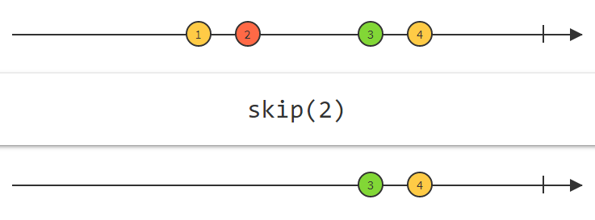
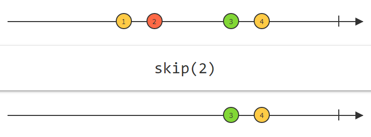

Data flow
RxJS is a library for reactive programming using Observables, to make it easier to compose asynchronous or callback-based code
|
Single |
Multiple |
| Pull |
Function |
Iterator |
| Push |
Promise |
|
Function
function myFunction(someVal){
return someVal*2
}
myFunction(5) // 10
Iterators and generators
function* myFunction() {
yield 5;
yield 10;
yield 15;
}
var generator = myFunction();
console.log(generator.next().value);
console.log(generator.next().value);
console.log(generator.next().value);
Promise
let willIGetNewPhone = new Promise((resolve, reject) => {
setTimeout(() => {
resolve(true)
}, 1000)
});
willIGetNewPhone.then(value => {
console.log("Got a new phone!") //prints after 1 sec
});

|
Single |
Multiple |
| Pull |
Function |
Iterator |
| Push |
Promise |
Observable |
Now entering RxJS
 Observable
Observable
var myObservable = new Observable(observer => {
observer.next(42);
observer.next(100);
setTimeout(() => {
observer.next(200);
}, 1000);
});
myObservable.subscribe(next => {
console.log(next)
});
.subscribe() and unSubscribe()
observable.subscribe(nextHandler, errorHandler, completionHandler)
let subscription = observable.subscribe(......)
subscription.unsubscribe()
Subject
let mySubject = new Subject();
mySubject.subscribe(next => {
console.log(next)
});
mySubject.next(42);
mySubject.next(200);
setTimeout(() => {
mySubject.next(500);
}, 1000);
Easy to use it wrong
 Inncorrect
Inncorrect
const subject = new Subject();
button.addEventListener(‘click’, () => subject.next('click');
subject.subscribe(x => console.log(x));
Correct
const clicks = new Observable(observer => {
button.addEventListener('click', evt => observer.next(evt));
});
Operators
myObservable/mySubject
.
.subscribe
.map()
.filter()
.skip()
.delay()
.throttleTime()
.retry()
.map(function)
 .filter(function)
.filter(function)
 .skip(number)
.skipLast(number)

.delay(ms)
.skip(number)
.skipLast(number)

.delay(ms)
 .retry(number)
.retry(number)
 Async/await is NOT a part of this
Async/await is NOT a part of this
async function getBackends() {
const someData = await getDataFromBackend(true);
const someData2 = await resolveAfter2Seconds(false);
return someData + someData2;
}
Overloaded

todoSubject: Subject = new Subject();
pushToStream(todoListChanged){
setTimeout(() => {
this.todoSubject.next({
editId: this.editObjectId,
addItemActive: this.addItemActive,
todoListChanged: todoListChanged,
todoItems: this.listOftodos
});
}, 0);
}
TodoListComponent
this._todoService.getStream()
.filter(current => current.todoListChanged)
.map(current => {
return current.todoItems;
})
.subscribe(next => {
this.todoListLocal = next;
});
Creating a timer using observables that executes each second for 5 seconds
let observable = Observable.interval(1000);
let subscription = observable
.take(5)
.subscribe(x => {
console.log(x)
});
RxJS
 Questions?
Questions?
 This page is intentionally left blank
Slide 2
This page is intentionally left blank
Slide 2
Pretty Code
private pushToStream(){
setTimeout(() => {
this.todoSubject.next({
editId: this.editObjectId,
addItemActive: this.addItemActive,
todoItems: this.listOftodos
});
}, 0);
}